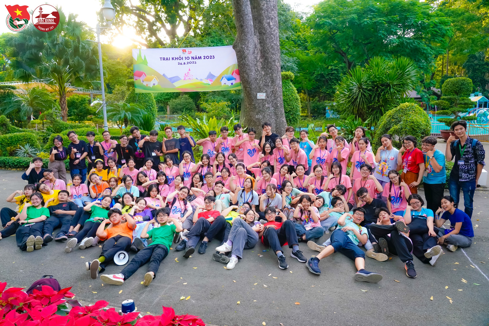
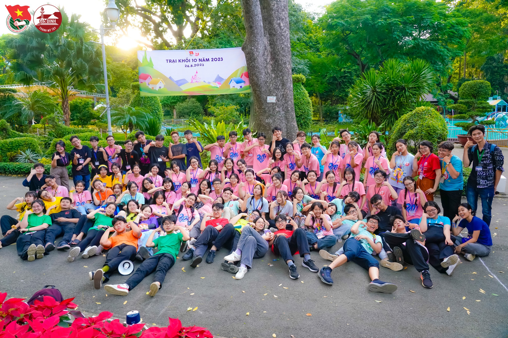
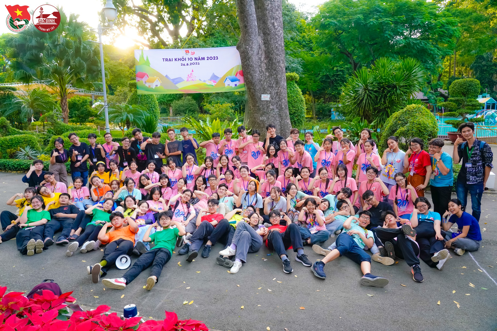

THPT GIA ĐỊNH
Thật kỳ diệu rằng sự tò mò vẫn sống sót sau giáo dục truyền thống.
–Albert Einstein

 


Thật kỳ diệu rằng sự tò mò vẫn sống sót sau giáo dục truyền thống.

Sứ mệnh:
Tầm nhìn:
Giá trị cốt lõi:
Cấp quốc tế:
Cấp quốc gia:
Tổng giải |
Môn |
Năm đầu tiên * |
Năm gần nhất * |
|---|---|---|---|
| 30 | Lý | 1984 | 2020 |
| 15 | Hóa | 1995 | 2019 |
| 12 | Toán | 1992 | 2019 |
| 10 | Tin | 1990 | 2022 |
| 9 | Sinh | 2007 | 2022 |
| 8 | Sử | 2005 | 2019 |
| 5 | Anh & Địa | 2012 | 2019 |
Trường có các học sinh và cựu học sinh tham gia các cuộc thi trên truyền hình, cụ thể: